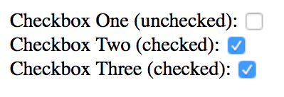

Attributes are additional values within HTML tags. They help to adjust behaviors of the tag. Here are some examples of attributes in a <div> tag.
<div id="purple" class="triceratops" data-attr="rule" contenteditable >Any tag can contain multiple attributes!</div>
Built-in attributes
The first, second, and fourth attributes (id, class, and contenteditable) are built directly into HTML. Each serves a different purpose. You can see a list of built-in attributes through the HTML attribute reference.
The third attribute, data-attr, is an example of a custom attribute.
Custom attributes
Custom attributes lets you store information on an element. You can create any number of custom attributes. You can also name them anything you want, with three conditions attached:
custom attributes always start with a data- prefix
custom attributes can only contain lowercase letters, numbers, dashes (-), underscores (_), dots (.) or colons (:)
custom attributes cannot contain capital letters
Here are some examples of valid custom attributes:
Built-in attributes have a unique behavior. When an attribute is present, they’re always in a true state. To see this in action, let’s say you have three checkboxes as follows:
The first checkbox would not be checked because it does not contain the checked attribute.
The second checkbox will be checked because it contains the checked attribute.
The third checkbox will also be checked because it contains the checked attribute, even though the attribute stores the string 'false'.

Third checkbox is checked even though it's "false"
When you build custom attributes, remember to make your attributes’ behavior consistent with this unique behavior.
Why use attributes?
Built-in attributes create functionality for HTML elements. You can use them if you need them. For example, the checked attribute adds a checkmark to checkboxes when it’s present. We’ll explore more attributes as you go through the course.
Custom attributes let you store and retrieve custom information, which is useful when you create more complicated components. You’ll see how we use them as you build more components.
For now, you need to learn how to set, get and remove attributes.
Setting Attributes
To set (add or change) an attribute, you can use the setAttribute method:
Element.setAttribute('name-of-attribute', 'value to set')
The first argument is the name of the attribute you want to set. The second argument is the value of the attribute you wish to set.
const element = document.querySelector('element')
element.setAttribute('checked', true)
You can also set custom attributes with Element.setAttribute.
element.setAttribute('data-color', 'red')
Reading Attributes
To get (or read) an attribute, you can use the Element.getAttribute method.
Element.getAttribute('name-of-attribute')
You can get the attribute of both built-in and custom attributes with this method:
getAttribute and setAttribute lets you get and set both built-in attributes and custom attributes. dataset, on the other hand, only lets you get and set custom attributes. On the plus side, dataset makes it easier to get and set custom attributes.
Here’s how it works.
First, every custom attribute you use is added to a dataset property automatically.
Note: At the time of writing, Opera Mini does not allow you to get and set attributes with dataset. If you need support for Opera Mini, consider using getAttribute and setAttribute instead.
Removing Attributes
To remove attributes, you use the removeAttribute method:
Element.removeAttribute('attribute-name')
You can remove both built-in and custom attributes. Here’s an example:
Practice adding, and removing attributes with Element.getAttribute, Element.setAttribute and Element.dataset.
Try these tasks:
Set an attribute with Element.setAttribute
Get an attribute with Element.getAttribute
Set an attribute with Element.dataset
Get an attribute with Element.dataset
Remove attribute with Element.removeAttribute
Answers
Let’s assume we have this html:
<div> This is a div </div>
const div = document.querySelector('div')
// Set attribute with `setAttribute`
div.setAttribute('data-play', true)
// Get the attribute we just set
const attr = div.getAttribute('data-play')
console.log(attr) // true
// Set attribute with dataset
div.dataset.stripes = 3
// Get attribute with dataset
const stripes = div.dataset.stripes
console.log(stripes) // 3
// Remove attribute
div.removeAttribute('data-play')
div.removeAttribute('data-stripes')
console.log(div) // The div should have no attributes now.